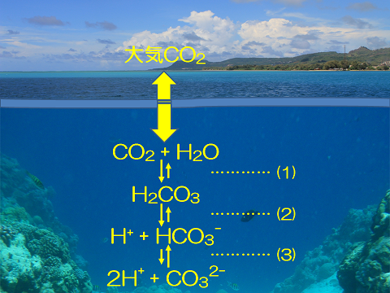

海水は通常、弱アルカリ性でｐH8.1程度を示しており、人間の活動によって人為的に排出された二酸化炭素のうち約30％を吸収する役割を担っています。
このように二酸化炭素を吸収すると海水のｐHが長い時間をかけて中性～弱酸性に傾くという現象が起こります。これを海洋酸性化といいます。
現状
気象庁によると、世界のどの海域においても海面付近での酸性化は進んでおり、
日本近海では平均すると1998年から2020年にかけて10年あたり約0.02の速度でpHの低下（酸性化）が起こっています。
影響
海洋が酸性化することは海の環境が変化することであるため、海にいる生物に大きな影響が及ぶと考えられます。
例えば、サンゴや貝などの石灰化生物と呼ばれる生物は炭酸カルシウム（CaCO3）を合成し体を作っています。
しかし、海水中の二酸化炭素の増加により炭酸カルシウムが容易に作れる環境ではなくなると、生きることが困難になってしまうと考えられます。
CO2が増加し、H+が増加するとCO3 2-はHCO3-となってしまいます。そのためCaCO3が作れなくなり生きられなくなってしまいます。
その結果生態系が崩れてしまったり、漁業や観光業を営む人々の資源がなくなってしまうことが考えられます。
また、すでに海水に吸収された二酸化炭素を大気中に戻すのは困難です。
そのため、今までは二酸化炭素排出量の約30％を吸収するという大きな役割ができていたが、それも果たせなくなってしまうことで地球温暖化に拍車をかける要因となります。
海洋酸性化の仕組み

大気中の二酸化炭素が海水に溶けて炭酸になります(1)
炭酸は水中で水素イオンと炭酸水素イオンに電離します(2)
炭酸水素イオンはさらに水素イオンと炭酸イオンに電離します(3)
図において矢印の大きい方に反応は偏っています。
水素イオンはｐHを下げる(酸性に近づける)要因であり、反応が(3)まで進むため、水中の水素イオン濃度が高くなり海水の酸性化が起こります。
また(3)の反応でできた炭酸イオンは石灰化生物(サンゴ、貝類)の体の材料です。石灰化生物の体の成分は(4)の式のようになっています。
しかし矢印は上向きの方が大きいので炭酸イオンは作られにくくなっているため(4)の反応が進行しないのです。
石灰化生物の体の成分を作る反応式
Ca2+ + CO32- ↔ CaCO3
解決策
海洋酸性化を止める対策としては二酸化炭素の発生を抑えることが最も重要であると考えられます。
海洋酸性化の原因は二酸化炭素の排出であり、海水が二酸化炭素を吸収することを抑えたり、すでに吸収された二酸化炭素を取り除くということも現実的には難しいです。
そのため化石燃料の消費を抑えた低炭素社会の構築など二酸化炭素を排出しないための対策をしていく必要があります。
まとめ
海洋酸性化はもうすでに進行していて海の環境を大きく変えてしまうことになるため、海の生物が生きられなくなってしまったり、海の資源を活用した産業の中で働く人々にとっても大きなダメージになります。
海洋酸性化をこれ以上進行させないためにも、二酸化炭素の排出を抑えた行動が大切です。